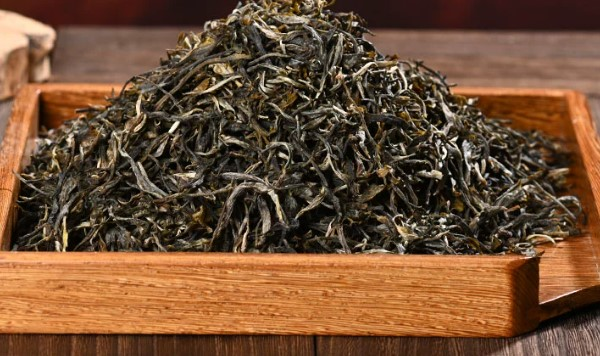
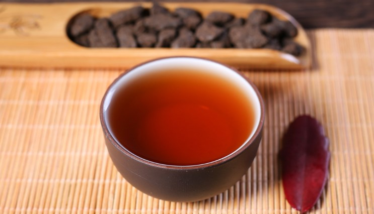
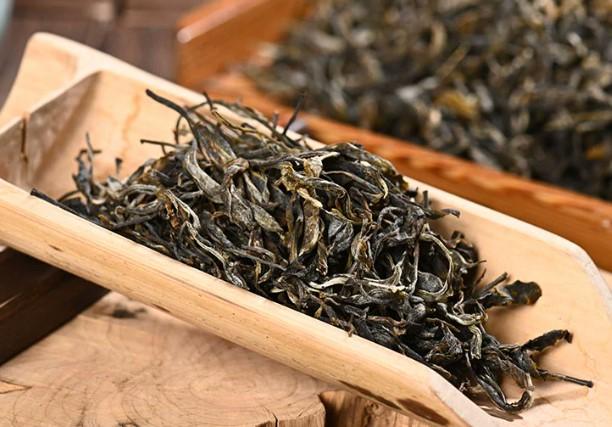
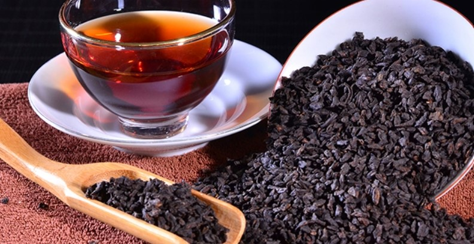

普洱散茶
普洱散茶是普洱茶的一种，芽头多，毫显。普洱茶的品级关于散茶来说普通分特级及一至十级共十一个品级，其级其余划分是按嫩度为根据的，嫩度越高的级别也就越高。
关于紧压茶的辨别，首要看以下方面：外形要求外形匀整正直；棱角统一，不缺边少角；厚薄一致，松紧适度；模纹明晰，条索划一紧结；色彩以黑褐，棕褐、褐赤色为正常。外表有霉花，霉点的普洱茶均为劣质。
简介
权衡嫩度看3点：
1、芽头多，毫显，嫩度高。
2、条索（叶片卷紧的水平）紧结，重实，嫩度高。
3、光彩光润,光彩润滑，滋润的嫩度好，光彩干燥的嫩度差。
然则关于熟茶来说，发酵的工艺，寄存的办法无不影响到茶的质量。十级的普洱，假如经由比较好的发酵，在经由很好的寄存，未必比那些发酵很差、寄存欠佳的特级茶口感差。所以我们常说，不以品级论普洱。当然了，普通来说，级别越高的茶，茶厂在加工时就会越细心，其发酵、寄存往往比品级低的茶要好，这个是后话，在这里先不说。
外形
再说说普洱茶的外形，这里的外形说的是紧压茶的外形。普通紧压茶分为饼茶、沱茶、方茶、砖茶等几种。当前很多人都感觉饼茶比较好，这也是个误区。依照以前的说法，一二级作散茶，三四级作沱茶，七八级作饼茶，九十级作砖茶，然则普洱茶，其外形与其质量早就无关了，砖、饼、沱、散茶等都有原料凹凸之分。
鉴赏
看外观
首先看普洱茶叶的条形，条形是否完整，叶老或嫩，老叶较大，嫩叶较细；嗅干茶气味兼看干茶色泽和净度，优质的云南普洱散茶的干茶陈香显露（有的会含有菌子干香、中药香、干桂圆香、干霉香、樟香等），无异、杂味，色泽棕褐或褐红（猪肝色），具油润光泽，褐中泛红（俗称红熟），条索肥壮，断碎茶少；质次的则稍有陈香或只有陈气，甚至带酸馊味或其它杂味，条索细紧不完整，色泽黑褐、枯暗无光泽。
看汤色
主要看汤色的深浅、明亮，优质的云南普洱散茶，泡出的茶汤红浓明亮，具金圈，汤上面看起来有油珠形的膜。质次的，茶汤红而不浓，欠明亮，往往还会有尘埃状物质悬浮其中，有的甚至发黑、发乌，俗称酱油汤。
闻气味
主要采取热嗅和冷嗅，热嗅看香气的纯异，冷嗅看香气的持久性；优质的热嗅陈香显著浓郁，且纯正，气感较强，冷嗅陈香悠长，是一种甘爽的味道。质次的则有陈香，但夹杂酸、馊味、铁锈水味或其它杂味，也有的是臭霉味。
品滋味
主要是从滑口感、回甘感和润喉感来感觉。优质的滋味浓醇、滑口、润喉、回甘，舌根生津；质次的则滋味平淡，不滑口，不回甘，舌根两侧感觉不适，甚至产生涩麻感。
看叶底
主要是看叶底色泽、叶质，看泡出来的叶底完不完整，是不是还维持柔软度。优质的色泽褐红、匀亮，花杂少，叶张完整，叶质柔软，不腐败，不硬化；质次的则色泽花杂、发乌欠亮，或叶质腐败，硬化。